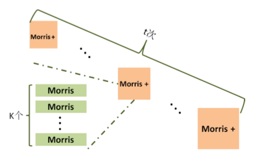

描述
假设我们在网络中有一路由器，它需要根据分组的源和目的地来存储分组的信息。我们想要利用通过路由器的信息来计算某些统计量，比如同一个源IP地址发送了多少次请求。当发生分布式拒绝服务攻击(Distribution Denial of Service, DDoS)时，指向某个目的地址的流量会急剧增加，但是网络交换设备的存储和计算资源十分稀缺，因此当整数n十分大时，怎样才能用更少的空间来近似表示整数n呢？
通过路由器的信息量要远比路由器可用的存储容量多，因此我们不能仅仅简单的存储通过路由器的信息的副本，然后根据这些副本来计算。
为了解决这样的问题，我们放松要求，不再使用精确值而是使用估计值来表示。为了使这些估计值能够正常被使用，因此我们需要对估计值有一些条件约束，通常我们需保证：
通常，\(\alpha = 1 + \epsilon\)，\(\epsilon\)是一个非常小的数，且\(\epsilon\)越小，估计值越接近真实值。并且需要上式在 \(1-\delta\) 的概率内成立，其中\(\delta\)是一个非常小的数。
该算法必须监视一系列的事件，并在任何时间给出该系列事件的估计数量，该算法有两种操作：
- update(): 让n增加1
- 输出估计值n
Morris Algorithm 1978
- initialize X \(\leftarrow\) 0
- for each update, increment X with probability \(\frac{1}{2^X}\)
- for a query, output \(\hat{n} = 2^X -1\)
| input | True | Probability | X | Estimator |
|---|---|---|---|---|
| 0 | 1 | 0 | 0 | |
| 1 | 1 | \(\frac{1}{2}\) | 1 | 1 |
| 1 | 2 | \(\frac{1}{2}\) | 1 | 1 |
| 1 | 3 | \(\frac{1}{4}\) | 2 | 3 |
| 1 | 4 | \(\frac{1}{4}\) | 2 | 3 |
| 1 | 5 | \(\frac{1}{4}\) | 2 | 3 |
| 1 | 6 | \(\frac{1}{4}\) | 2 | 3 |
| 1 | 7 | \(\frac{1}{8}\) | 3 | 7 |
| 1 | 8 | \(\frac{1}{8}\) | 3 | 7 |
Analysis
Let XN denote X in Morris' algorithm after N updates. Then, we have \[ E[2^{X_N}] = N + 1 \] Proof \[ \begin{align*} E[2^{X_{N+1}}] &= \sum_{j\geqslant1}P(X_N=j)E[2^{X_{N+1}}|X_N=j] & \text{全期望定理}\\ &= \sum_{j\geqslant 1} P(X_N=j)(2^{j+1} \cdot \frac{1}{2^j} + 2^j \cdot (1-\frac{1}{2^j})) & \text{$X_{N+1}$有$\frac{1}{2^j}$的概率等于$j+1$} \\ &= \sum_{j\geqslant1}P(X_N=j)\cdot 2^j + \sum_{j\geqslant 1}P(X_N=j) & \text{$E[2^{X_N}]=\sum_{j\geqslant 1}P(X_N=j)\cdot 2^j$} \\ &= E[2^{X_N}] + 1 \end{align*} \] 归纳可得， \[ E[2^{X_N}]=N + 1 \] 因此有\(E[2^{X_N} - 1] = N\)，所以 \(2^{X_N}-1\) 是N的一个无偏估计。尽管无偏性是 Morris Algorithm很好的一个性质，但是无偏性不是评价一个估计值好坏的唯一标准。运用Morris Algorithm中的计数器X去估计真实值N是很敏感的，因此需要进一步刻画真实计数N估计值的波动情况，即估计值的方差\(Var(2^{X_N}-1)=Var(2^{X_N})\). \[ \begin{align*} Var(2^{X_N}) &= E[(2^{X_N})^2]-(E[2^{X_N}])^2 \\ &= E[2^{2X_N}]-(N+1)^2\\ E[2^{2x_N}] &= \sum_{i\geqslant 1} 2^{2i} P(X_N = i) \\ &= \sum_{i \geqslant 1} 2^{2i} \left( \dfrac{1}{2^{i-1}}P(X_{N-1}=i-1) + (1-\dfrac{1}{2^i}) P(X_{N-1}=i) \right) & \text{全概率公式} \\ &= \sum_{i \geqslant 1}2^{i+1}P(X_{N-1}=i-1) + \sum_{i \geqslant 1}2^{2i}P(X_{N-1}=i) -\sum_{i \geqslant 1}2^i P(X_{N-1}=i) \\ &= 4\sum_{i \geqslant 1}2^{i-1}P(X_{N-1}=i-1) + E[2^{2X_{N-1}}]-E[2^{X_{N-1}}] \\ &= 4E[2^{X_{N-1}}] + E[2^{2X_{N-1}}]-E[2^{X_{N-1}}] \\ &= E[2^{2X_{N-1}}]+3E[2^{X_{N-1}}] \end{align*} \] 由于\(E[2^{2x_0}]=1\)，使用数学归纳法可得 \[ E[2^{2X_N}]=3\sum_{i=0}^{N-1}E[2^{X_i}]+1 \] 因此， \[ E[2^{2X_N}] = \dfrac{3N(N+1)}{2} + 1 \] 所以 \[ Var(2^{X_N}) = \dfrac{1}{2}(N^2-N) \sim O(N^2) \] 即Morris Algorithm随着计数N的增大其方差也在增大。其原因在于该算法不是直接估计N，而是估计存储N所需要的位数，即\(log_2N\)，当估计值比真实值小1时，估计的事件发生次数可能仅接近于真实事件发生次数的50%；而当估计值比真实值大1时，估计的事件发生次数是真实发生次数的近2倍。
对于Morris算法给出的估计值，其切比雪夫界为 \[ P(|\hat{N}-N| \gt \epsilon N) \leqslant \dfrac{Var(\hat{N})}{\epsilon^2 N^2} \lt \dfrac{\frac{1}{2}N^2}{\epsilon^2 N^2} = \dfrac{1}{2\epsilon^2} \] 这并不好，因为只有当\(\epsilon \geqslant 1\)时，\(P(|\hat{N} - N| \gt \epsilon N)\)才小于\(\dfrac{1}{2}\)。
Morris+ Algorithm
Input: 事件流F, \(\delta\) 和 \(\epsilon\)
Output: 指定事件计数C
\(n= \lceil \frac{1}{\delta \epsilon^2} \rceil\);
初始化计数数组X[1...n] = 0;
while 事件流F未结束 do
if 指定事件发生 then
for i = 1 to n do
以 \(\frac{1}{2^{X_i}}\) 的概率更新\(X_i= Xi + 1\);
for i = 1 to n do
\(C = C + 2^{X_i} - 1\);
\(C=\frac{C}{n}\);
return C;
根据方差的性质，相对于Morris Algorithm，Morris+算法的方差减小到了\(O\left(\dfrac{N^2}{n}\right)\). 根据Chebyshev不等式，有 \[ P(|\hat{N} - N| \gt \epsilon N) \lt \dfrac{Var(\hat{N})}{\epsilon^2 N^2} \lt \dfrac{\frac{N^2}{2n}}{\epsilon^2 N^2} = \dfrac{1}{2n\epsilon^2} \] 因此随着次数的增多，估计值围绕真实值的波动会越来越小。令 \(\frac{1}{2n\epsilon^2} \lt \delta\), 即 \(n = O\left(\frac{1}{\delta \epsilon^2}\right)\)时， \[ P(|\hat{N} - N| \gt \epsilon N) \lt \delta \] 表明事件计数的估计值\(\hat{N}\)偏离真实值N大于\(\epsilon N\)的概率小于\(\delta\), 此时，称\(\hat{N}\)为N的\((\epsilon, \delta)\)近似估计。
Morris++ Algorithm
对于Morris+ 算法，需要运行 \(O\left(\frac{1}{\delta \epsilon^2}\right)\)次Morris算法，并取平均值可以得到真实计数的\((\epsilon,\delta)\)的近似估计。但是，Morris++ 算法只需要运行\(O\left(\frac{ln \frac{1}{\delta}}{\epsilon^2}\right)\)次Morris算法，就可以得到真实计数的\((\epsilon,\delta)\)近似估计。
Input: 事件流F, \(\delta\) 和 \(\epsilon\);
Output: 指定事件计数C
\(n=\lceil ln \frac{1}{\delta} \rceil, \quad m=\lceil \frac{1}{\epsilon^2} \rceil\);
初始化数组X[1...n,1...m] = 0, C[1...n] = 0;
while 事件流 F 未结束 do
if 指定事件发生 then
for i = 1 to n do
for j = 1 to m do
以 \(\frac{1}{2^{X_{ij}}}\) 的概率更新 \(X_{ij} = X_{ij} + 1\);
for i = 1 to n do
for j = 1 to m do
\(C_i = C_i + (2^{X_ij} - 1)\);
\(C_i = \frac{1}{m} C_i\);
\(C \leftarrow C[1 ... n]\)的中位数;
return C;
Morris+算法给出的输出值是真实值的无偏估计，而且次数越多围绕真实值的波动越小。假设运行多个Morris+算法，算法输出值偏离真实值很大的概率会很小，所以其分布应该如下图所示：
可以看出，多次Morris+输出的估计值的中位数应该和真实值比较接近，而Morris++算法正是基于这种直觉提出的。
Morris++算法共运行\(n = ln\left(\frac{1}{\delta}\right)\)次Morris+算法，而每次Morris+算法又运行\(m = \frac{1}{\epsilon^2}\)次Morris算法。虽然每次Morris+算法可能达不到预期的精度（Morris算法的运行次数少于\(O\left(\frac{1}{\delta \epsilon^2}\right)\)次），但是\(n = ln\left(\frac{1}{\delta}\right)\)次Morris+算法都是围绕在真实值附近波动，因此这些Morris+算法输出值的中位数可能是一个比较好的估计。

那么，为什么运行\(n = ln\left(\frac{1}{\delta}\right)\)次Morris+算法就可以输出预期精度的估计值呢？
假设第 i 次Morris+算法由 m 个Morris算法构成，依据Chebyshev不等式，有 \[ P(|\hat{N_i}-N| \gt \epsilon N) \lt \dfrac{1}{2m\epsilon^2} \] 其中\(\hat{N_i}\)为单次Morris+算法的输出值，而N为事件计数真实值，因此，只要运行\(m=O\left(\frac{1}{\epsilon^2}\right)\)次Morris算法，就可以使得\(\hat{N_i}\)偏离真实值超过\(\epsilon N\)的概率小于\(\frac{1}{3}\).
针对第 i 次Morris+算法运行结果，定义如下指示变量 \(Y_i\): \[ \begin{align*} Y_i = \left\{ \begin{array}{**lr**} 1, & \text{if $|\frac{1}{n}\sum_{j=1}^{n} \hat{N_{ij}}-N|\gt \epsilon N$;}\\ 0, & \text{otherwise.} \end{array} \right. \end{align*} \] Yi是一个随机变量，表示了第 i 次Morris+算法运行结果的误差是否符合预期。当\(Y_i = 1\)表示第 i 次Morris+算法失败，否则成功。 \[ E[Y_i] = P(Y_i = 1) \lt \dfrac{1}{3}, \qquad m = O\left(\frac{1}{\epsilon^2}\right) \] 假设运行 t 次Morris+算法，其中至少有一半Morris+算法失败，意味着中位数左边或者右边都是失败的，根据Chernoff不等式可得： \[ \begin{align*} P(\sum_i Y_i \gt \frac{t}{2}) &= P(\sum_i Y_i \gt (1+\frac{1}{2})\frac{t}{3}) \\ &\leqslant P(\sum_i Y_i \gt (1+\frac{1}{2})\mu) & \text{Let $\mu \leqslant \frac{t}{3}$} \\ &\leqslant exp(-\frac{\mu \left(\frac{1}{2}\right)^2}{4}) \lt \delta \end{align*} \] 又因为 \(\mu \leqslant \frac{t}{3}\)，所以 \[ e^{-\frac{t}{48}} \leqslant e^{-\frac{\mu \left(\frac{1}{2}\right)^2}{4}} < \delta \] 因此，有\(t > 48 \ln \frac{1}{\delta}\)，即需要运行\(t=O\left(\log \frac{1}{\delta} \right)\)次Morris+算法，根据 t 次结果取中位数，就可以得到符合精度要求的\((\epsilon,\delta)\)近似估计。
Tug of War
如上所述，综合运用Chebyshev不等式和Chernoff不等式得到一个相对紧的概率上界的方法称为Tug of War技术。